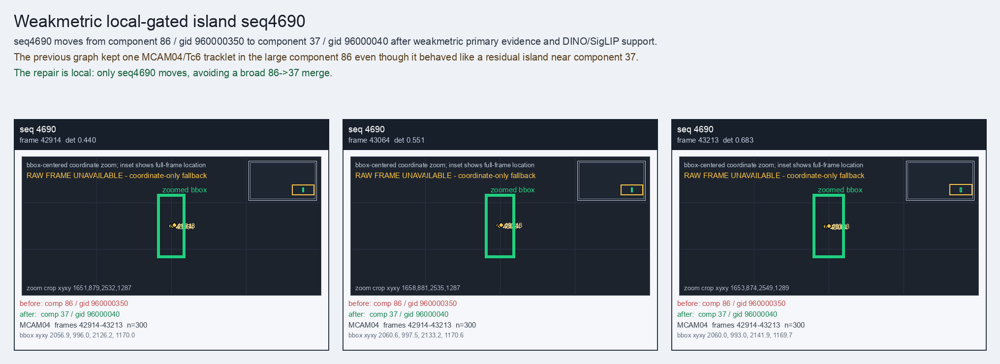

Weakmetric local-gated island seq4690
seq4690 moves from component 86 / gid 960000350 to component 37 / gid 96000040 after weakmetric primary evidence and DINO/SigLIP support.
Before
component 86, gid 960000350, component_size 159
component 86, gid 960000350, component_size 159
After
component 37, gid 96000040, component_size 39, decision_status subpart_reassign
component 37, gid 96000040, component_size 39, decision_status subpart_reassign
Evidence
target_sim=0.7287, target_margin=0.0495, source_rest_margin=0.6593
Raw frame
unavailable_coordinate_fallback
target_sim=0.7287, target_margin=0.0495, source_rest_margin=0.6593
Raw frame
unavailable_coordinate_fallback
Failure and fix
Old failure: The previous graph kept one MCAM04/Tc6 tracklet in the large component 86 even though it behaved like a residual island near component 37.
New implementation: The repair is local: only seq4690 moves, avoiding a broad 86->37 merge.
BBox evidence

Moved tracklets
| seq | video | gid | component | frames | dets |
|---|---|---|---|---|---|
| 4690 | vlincs_MS01_MC0001_MCAM04_2024-03-Tc6 | 960000350 -> 96000040 | 86 -> 37 | 42914-43213 | 300 |